⓪ 总览 —— 63 张、8 组、一张对照表
下表把 63 张图按组列出。点「图号」可跳到该组； 「原文件名」列给出可回查的原始文件；「尺寸 / 体积」列是原图而非缩略图的数值。
| 组 | 图号 | 内容 | 原文件名 | 尺寸 / 体积 |
|---|---|---|---|---|
| ① 核心剖面与尺寸链 · 9 张 | ||||
| ① | i024 | Segmented Rollers & 截面 —— 全套尺寸链 | IMG_20230114_175023.jpg | 1500×1157 · 0.78 MB |
| i015 | 滚筒受力四图 —— 磁引力 vs 涡流斥力 | FBiim76WEAcZSTR.jpeg | 960×741 · 0.09 MB | |
| i028 | Fig.2 三环滚柱数 —— 12 / 12+10 / 12+10+10 | IMG_20230208_102055.jpg | 1500×1719 · 1.12 MB | |
| i035 | 四格几何模型 —— 双锥包络 + 环上密排点阵 | IMG_20231028_191302.jpg | 1496×4116 · 0.88 MB | |
| i048 | 「我的 SEG 设计」—— 三环 + 环间密排滚珠 | 我的seg设计.gif | 381×381 · 1.90 MB | |
| i052 | SEG 与超双曲锥的关联 | 瑟尔seg与超双曲锥结构关联.png | 723×651 · 0.40 MB | |
| i062 | 双曲锥 → 多环体积比（同族高清） | 超双曲锥可以应用在seg多环体积比.jpg | 1913×1800 · 1.20 MB | |
| i037 | 碟形 + 上下同轴线圈场蓝图（深蓝） | fccf8ee86b80e5fc9446c02979e562ac-61159.jpg | 320×496 · 0.06 MB | |
| i046 | 另一种飞碟的剖面 —— 电容 + 压电块 + 赤道定时电路 | 卡尔飞碟.jpg | 2618×1280 · 1.09 MB | |
| ② 充磁工艺与线圈 · 9 张 | ||||
| ② | i001 | 磁显影片 + 充磁头（三格） | 1713756534819_290x387.gif | 290×387 · 1.90 MB |
| i009 | 充磁教学页 —— 三种充磁方向 + 六种磁学 | FBXxsySVgAES5J3.jpeg | 2018×1264 · 0.25 MB | |
| i010 | 充磁教学页 —— 双绕组充磁头 + 「磁棱镜」类比 | FBXzC9_VEAMHFTm.jpeg | 680×590 · 0.09 MB | |
| i011 | Correlated Magnetics / Polymagnet —— 编程磁体 | FBcfBm3VcAIweMn.jpeg | 680×501 · 0.07 MB | |
| i012 | 手工多极线圈阵列（桌面版） | FBcggDuVUAEgSCF.jpeg | 680×456 · 0.05 MB | |
| i013 | 充磁台全流程（含电源与显影结果） | FBchS6CUcAMpCF3.jpeg | 744×1200 · 0.13 MB | |
| i022 | 环面正弦波 + PRINT COIL #16 实物 | IMG_20230114_172229.jpg | 4595×1800 · 2.18 MB | |
| i034 | 充磁头四层命名的原始标注图 | IMG_20230809_162725.jpg | 1104×1080 · 0.51 MB | |
| i043 | Tesla 1888 旋转磁场 + 哥伦布蛋 + 充磁头（并置） | searl充磁与特斯拉哥伦布蛋的线圈结构.jpg | 1218×1800 · 1.05 MB | |
| ③ 材料 · 磁体 · 超导 · 6 张 | ||||
| ③ | i055 | 原版磁体的光谱分析与六元素 | 瑟尔磁环材料成分.jpg | 1500×2661 · 1.12 MB |
| i023 | 环的分段实体 + 归一化运动数据表 | IMG_20230114_172844.jpg | 3167×1800 · 1.82 MB | |
| i014 | 磁通钉扎 / 迈斯纳效应 —— 与「过载降温」主张的关联 | FBiVrzDXIAkYxhV.jpeg | 680×556 · 0.08 MB | |
| i059 | 直线加速 / 交变磁块阵列的桌面实验 | 直线加速v形磁场.jpg | 4297×1800 · 2.29 MB | |
| i008 | SEG 3D 俯视（SMI）+「无偏固态磁二极管」 | FBX4KaaUYAIU0Ff.jpeg | 680×528 · 0.08 MB | |
| i045 | SEG 实机（12 滚筒）与多版 3D | seg发电设备.jpg | 1500×652 · 0.65 MB | |
| ④ 场形 · 波形 · 涡旋 · 9 张 | ||||
| ④ | i002 | 3×3 磁斑阵列（彩虹同心环） | 1714188913501_960x960.gif | 960×960 · 3.26 MB |
| i003 | 3×3 磁斑阵列（同族，相位略异） | 1714224254704_960x960.gif | 960×960 · 4.25 MB | |
| i004 | 淡黄同心环波纹（过曝中心） | 1714810703118_735x735.gif | 735×735 · 2.89 MB | |
| i005 | 带参数标注的同心环场图（n、k） | 1714811673482_960x960.gif | 960×960 · 9.49 MB | |
| i006 | 规则格点场（密度渐变） | 1714903424366_960x960.gif | 960×960 · 3.87 MB | |
| i029 | 磁纹展开 = 正弦波（五格链） | IMG_20230212_210513.jpg | 1500×3466 · 1.68 MB | |
| i047 | 吸引场 vs 排斥场（对偶场线图） | 引力与斥力磁场.jpg | 2820×1800 · 1.45 MB | |
| i050 | 滚筒的摆线轨迹（12 瓣） | 摆线动图.gif | 486×328 · 4.10 MB | |
| i063 | 历史场形图谱（三格） | 飞碟场.jpg | 1492×3268 · 0.56 MB | |
| ⑤ 幻方与真理表 · 6 张 | ||||
| ⑤ | i030 | 真理表程序 —— 子幻方数量与分级可视化 | IMG_20230220_183915_1684898198959.jpg.jpg | 2951×1800 · 0.55 MB |
| i031 | 五眼 × Haramein 标度律 × 真理表阶数 | IMG_20230221_091703.jpg | 1496×1568 · 0.70 MB | |
| i044 | 「瑟尔幻方真理表 VBA 程序」完整界面 | searl真理表.jpg | 1500×2024 · 1.18 MB | |
| i051 | 15 阶幻方 / 4410 / SPACE FRAME vs TIME FRAME / Harmonograph | 瑟尔15阶幻方与harmonogragh.jpg | 1500×1939 · 1.59 MB | |
| i060 | 真理表算法生图 ①（花环） | 真理表算法生图.gif | 960×960 · 0.80 MB | |
| i061 | 真理表算法生图 ②（点阵同心环） | 真理表算法生图2.gif | 960×960 · 0.41 MB | |
| ⑥ 历史照片与人物 · 11 张 | ||||
| ⑥ | i007 | Sir John Roy Robert Searl 肖像与生卒 | 20231214_203530.jpeg | 511×544 · 0.03 MB |
| i019 | My Mail Bag 2004 —— Searl Effect Rotor 五图 A~E | FBx3d79VQAMhukv.jpeg | 680×549 · 0.08 MB | |
| i020 | 宣传页 —— 8 条「保证」+ 1968 深空计划 | IMG_20230107_140703.jpg | 2620×1800 · 1.65 MB | |
| i021 | Searl 传记页 —— 脚注直接引用 Podkletnov | IMG_20230114_172002.jpg | 1500×2083 · 0.71 MB | |
| i025 | 实验室十二格 —— 充磁台、铁屑成像与 Searl 手迹 | IMG_20230114_175135.jpg | 1500×3247 · 2.34 MB | |
| i026 | 双螺旋轨迹 + 仿真帧 | IMG_20230129_095028.jpg | 2813×1800 · 1.43 MB | |
| i027 | Moore 问答 —— 3 W 演示、436 mA 静止阈值、'traffic jam' | IMG_20230207_101227.jpg | 2579×1800 · 2.02 MB | |
| i032 | 俄/中复制机 + 「七发电机」中文说明 | IMG_20230324_104318.jpg | 4261×1800 · 3.01 MB | |
| i033 | 在中国的现场演示（含国旗背景） | IMG_20230804_084251.jpg | 1404×1660 · 1.10 MB | |
| i036 | 阿库拉（Акула0083）四相环形设备 | akula自持4相环形点亮led设备.jpg | 1500×1052 · 0.76 MB | |
| i041 | 衍射环 与 多环点阵模型 的并置 | searl seg.jpg | 3244×1800 · 1.84 MB | |
| ⑦ IGV 飞碟总集 · 6 张 | ||||
| ⑦ | i038 | IGV 飞行胶片（带片孔与帧号） | igv.gif | 303×275 · 0.16 MB |
| i039 | IGV 制造总集（十五格） | igv飞碟制造.jpg | 3124×1800 · 2.26 MB | |
| i040 | 控制原理中文原文 —— 64 个 plunger + 陀螺仪 + 2000 英寸 | igv飞碟功能宣传.jpg | 1500×1891 · 1.26 MB | |
| i054 | 「一根滚筒 = 八片」+「中心是单极」 | 瑟尔滚筒片磁场.jpg | 1500×1500 · 1.08 MB | |
| i057 | 电离辉光 / 正负离子流 / 真空包膜 | 瑟尔飞碟场光环.jpg | 1500×2224 · 1.08 MB | |
| i056 | FEMM 磁路仿真尝试（作者自注「非现实」） | 瑟尔磁环磁场示意图非现实.jpg | 1496×1824 · 0.97 MB | |
| ⑧ 讲义 · 论述 · 手稿 · 7 张 | ||||
| ⑧ | i049 | 手绘草稿 —— 最小尺寸 SEG 的手算 | 我设计的最小尺寸seg草稿.jpg | 3208×2400 · 0.20 MB |
| i016 | 「从非相干到相干」大屏讲义 + Laithwaite 蝴蝶 | FBs8ejVVkBkl4Fv.jpeg | 2048×1487 · 0.39 MB | |
| i017 | 「无摩擦、无空气阻力、如同身处太空」 | FBtFQYMVcAEWVC1.jpeg | 680×507 · 0.07 MB | |
| i018 | 水坝类比 —— 四层材料的各自职能 | FBx2zNZUUAEN9yI.jpeg | 586×680 · 0.09 MB | |
| i042 | 开关模式分组 / 铁屑成像 / 示波器正弦波 | searl充磁.jpg | 2642×1800 · 1.92 MB | |
| i053 | B-Field Torsion（JL Naudin 1999）+ 34 个可辨极 | 瑟尔充磁.jpg | 1500×1521 · 0.95 MB | |
| i058 | BLOCK 24 数据表 + 碟形剖面 + 太阳系「壳」 | 瑟尔飞碟结构.jpg | 2490×1800 · 1.60 MB | |
合计：原图 83.57 MB → 缩略图 7.92 MB（9.5%）；其中动图 11 张（缩略图取首帧，点击可看原始 GIF）。
怎么用这一页：① 想核对某个数字（如滚柱数 12/22/32、滚筒径、幻方常数）→ 直接看 组① 与 组⑤；② 想知道「充磁到底怎么做的」→ 组②；③ 想看原始论证书页 → 组⑧；④ 想对照八种飞碟体系 → 走 飞碟科技横向对比_八体系共性解剖.html。
① 核心剖面与尺寸链
这一组是图纸本身：环与滚筒的分层命名、直径与厚度链、滚柱配置数、以及把 SEG 放进双曲锥几何里的几组模型。看这一组时请对照母页的铁律：环外径恒等于 A.C. 内缘、滚筒「8」是轴向分片数。
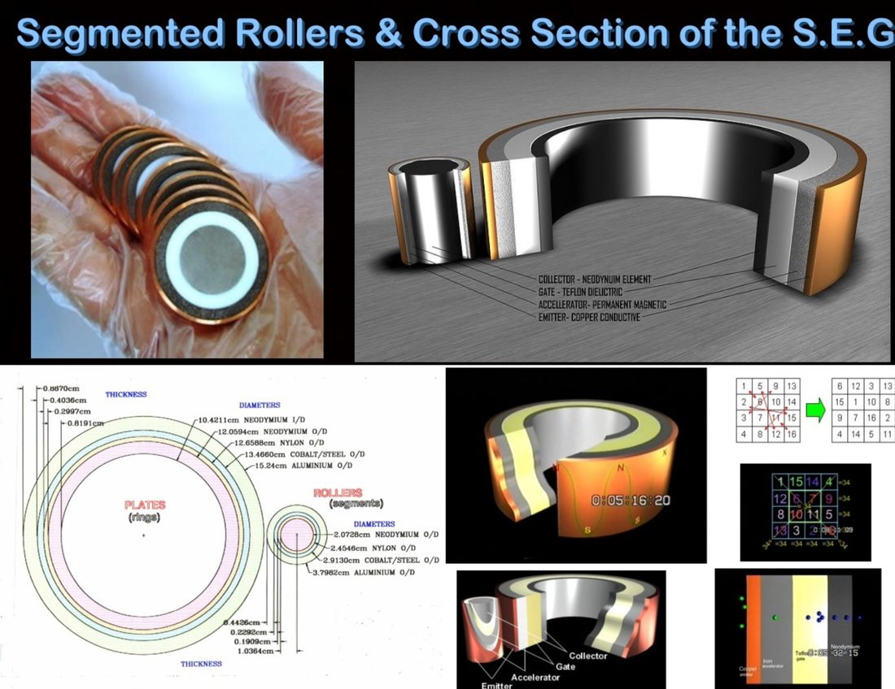
COLLECTOR - NEODYMIUM ELEMENT / GATE - TEFLON DIELECTRIC / ACCELERATOR - PERMANENT MAGNETIC / EMITTER - COPPER CONDUCTIVE；③ 左下工程图给出完整尺寸链 —— 盘（rings/plates）直径：10.4211 / 12.0594 / 13.6686 / 15.24 cm（Nd 内径 → Nd 外径 → Co-steel 外径 → Al 外径）；滚筒（segments）直径：2.0725 / 2.4544 / 2.9130 / 3.7962 cm；④ 右下是 4×4 与 5×5 幻方（5×5 那张带 ±34 标注）。⚠ 一处必须点出的不一致：尺寸链用的是 Nd / COBALT-STEEL / ALUMINIUM，而剖面用的是 Nd / TEFLON / MAGNETIC / COPPER —— 同一张图里两套命名并行；更明显的是环用 Teflon、滚筒用 Nylon（尺寸链里滚筒第二层标
NYLON O/D）。本页不做调和，并列保留。
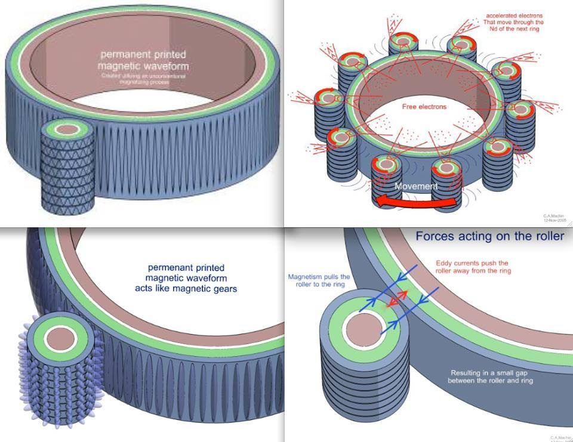
permanent printed magnetic waveform（印制磁波形），并说它 acts like magnetic gears（像磁齿轮）；② 俯视图里环内标出 Free electrons，红箭头写 accelerated electrons that move through the Nd of the next ring；③④ 受力分解：蓝箭头 = 磁引力把滚筒拉向环，红箭头 = 涡流斥力把滚筒推离环，两者平衡 → Resulting in a small gap between the roller and the ring（形成小气隙）。
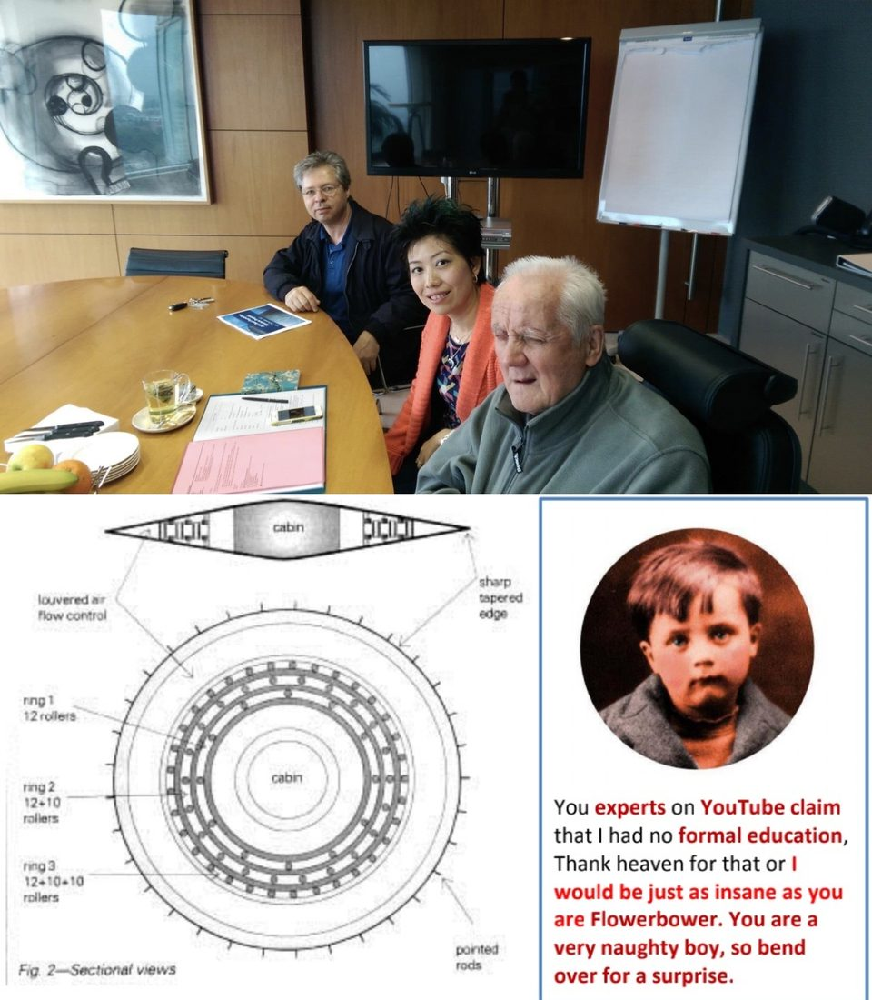
cabin（乘员舱）/ louvered air flow control（百叶式气流控制）/ sharp tapered edge（尖锥边缘）/ pointed rods（尖端杆）。另两格：Searl 与中方会面的现场照；以及本人对 YouTube 质疑者的回击文（大意：「你说我没受过正规教育，谢天谢地，否则我就跟你们一样疯了」）。
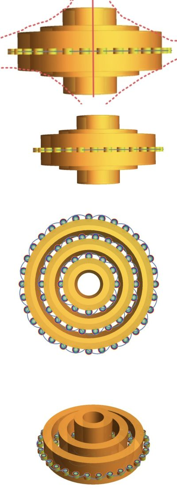
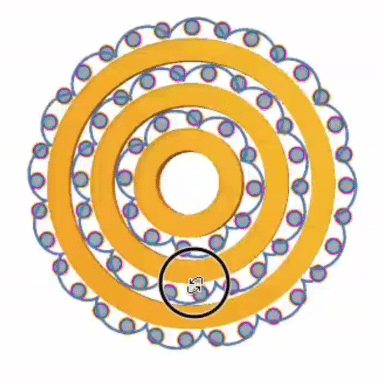
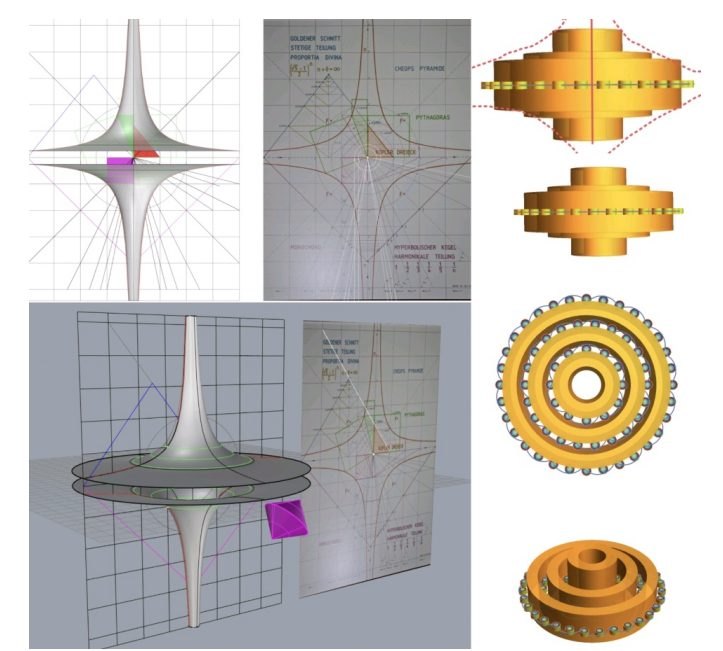
GOLDENER SCHNITT（黄金分割）/ STETIGE TEILUNG（连续分割）/ PROPORTIA DIVINA（神圣比例）/ CHEOPS PYRAMIDE（大金字塔）/ PYTHAGORAS / KEPLER DREIECK（开普勒三角）/ MONOCHORD（单弦琴）/ HYPERBOLISCHER KEGEL（双曲锥）/ HARMONIKALE TEILUNG（和谐分割），并写出 (√5−1)/2 = 0.618；左下 = 双曲面 + 两个水平环 + 一个斜置紫块的三维场景；右侧三格是同一套金色几何模型。定级：C —— 这是把两套几何并置的读法，不是原文承认的引用关系。
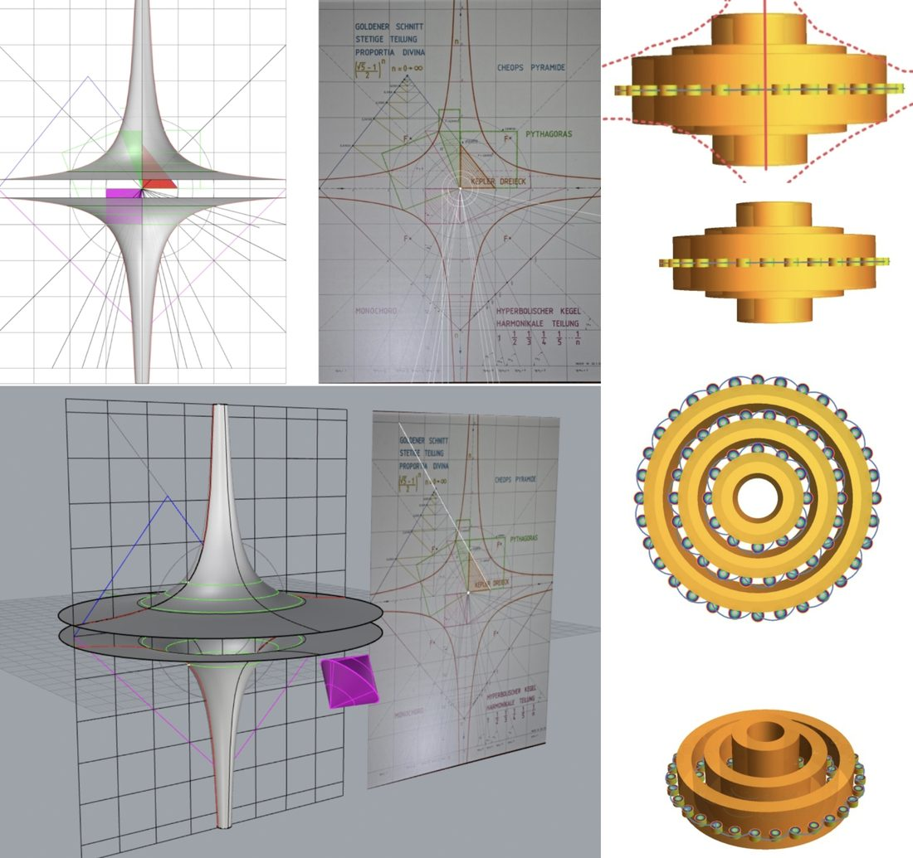
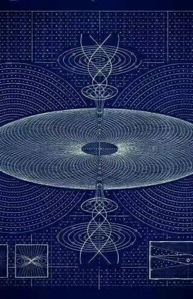
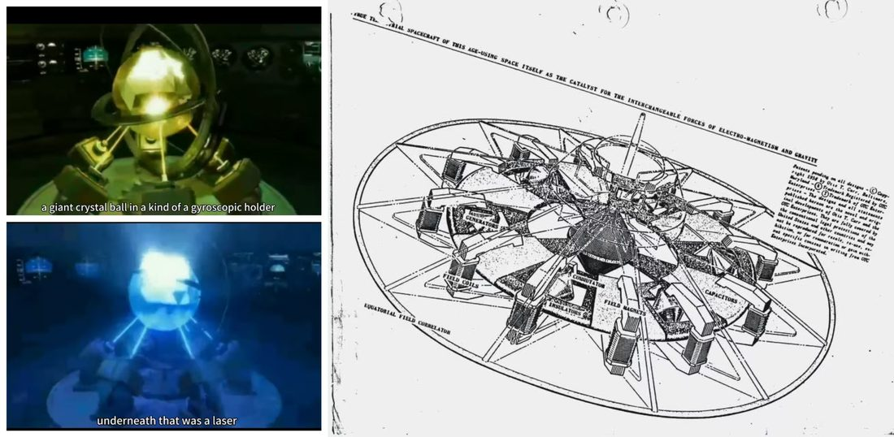
CAPACITORS（电容组）、PIEZO BLOCK（压电块）、相位调制与放大模块，外围一圈标 EQUATORIAL TIMING CIRCUIT（赤道定时电路）；页边一行大写：…THE SPACECRAFT OF THIS AGE-OLD SPACE FLEET AS THE CATALYST FOR THE INTERCHANGEABLE FORCES OF ELECTRO-MAGNETISM AND GRAVITY。左半是电影截图（金色晶球被「陀螺架」托住，字幕 a giant crystal ball in a kind of a gyroscopic holder）。⚠ 本页把它单列，正是为了做反例：这是「扁碟 + 内部设备舱」布局，与 SEG 的「多层同心环」是两种完全不同的构型。
本组 9 张。图注由本机逐张打开实看后写下；缩略图宽 1100 px（原图 83.6 MB → 缩略图 7.9 MB），点击图片在新页打开原始分辨率文件。
② 充磁工艺与线圈
这一组回答一个很实际的问题：「印一个磁场图案」到底是怎么做的。从教学页的原理，到磁显影的验证，到桌面作坊版，再到 SEG 团队自己的充磁头图纸 —— 本组是全页引用链最硬的一组。
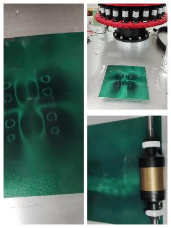
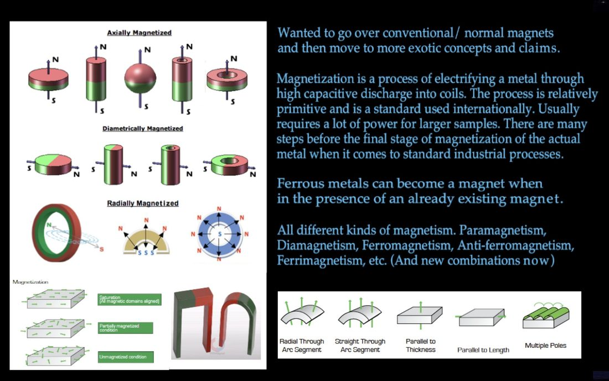
Radial Through Arc Segment / Straight Through Arc Segment / Parallel to Thickness / Parallel to Length / Multiple Poles 五种充磁方向。右半原文最要紧的一句：「Magnetization is a process of electrifying a metal through high capacitive discharge into coils.」（充磁 = 用高容性放电把金属「电化」进线圈），并说这工艺「相对原始、国际通用、大样品很耗电」。
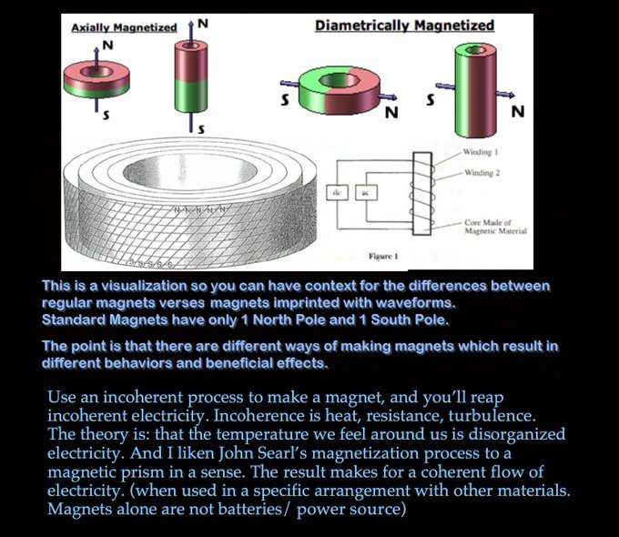
Figure 1（Winding 1 / Winding 2 / Core Made of Magnetic Material）与一个大环线框（环顶面标一串 N）。下方原文是理解 SEG 的一把钥匙：「用非相干的方式做磁体，你收获的就是非相干的电；非相干就是热、电阻、湍流」；而 「我把 John Searl 的充磁过程类比为一台磁棱镜（magnetic prism）」，其结果是相干的电流。并特别声明：「磁体本身不是电池/电源」。
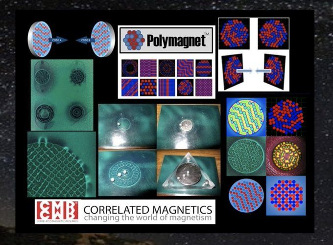
意义：「把任意磁场图案印进磁体」这件事已经有工业实现，SEG 说的
permanent printed magnetic waveform 并不是孤例。
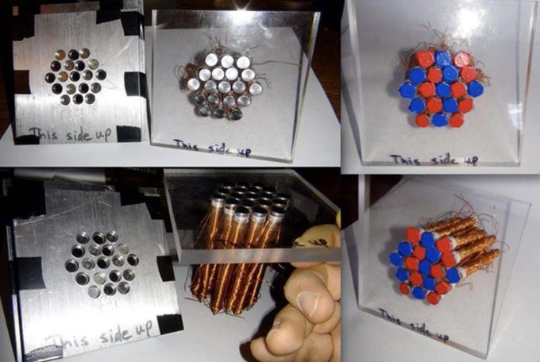
this side up，旁边压着黑色极靴块。这是「解析磁体（correlated magnetics）」的作坊级做法：用线圈阵列逐点写磁。
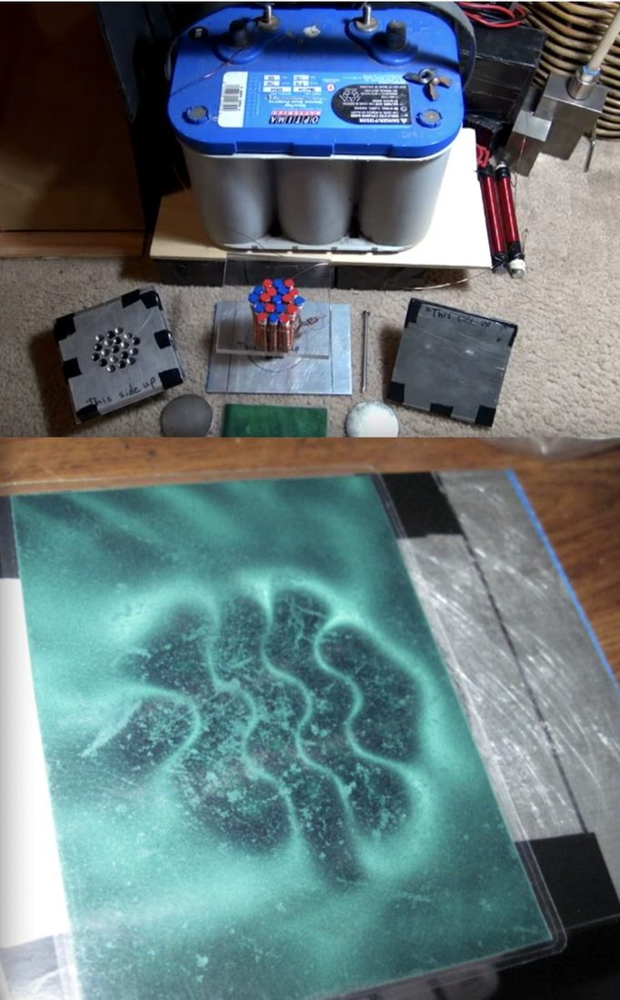
this side up 板、绿色磁显影片、铜线圈柱、线缆。下格是结果：绿色显影片上显出一片枝晶状（树突状）发光纹路，从中心放射成不规则的分形枝杈。从「电源 → 线圈阵 → 图案化充磁 → 显影检验」，这一套流程在本组有完整实物链。
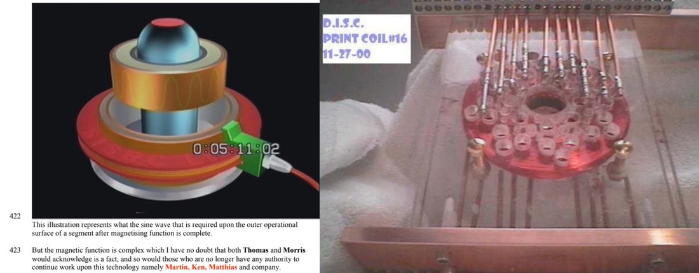
D.I.S.C. PRINT COIL #16 11-27-00。左格是 3D 渲染（多环 + 中央柱 + 线缆，带时间码）。下方传记正文（编号 422/423）原文：「This illustration represents what the sine wave that is required upon the outer operational surface of a segment after magnetising function is complete.」—— 即：环/滚筒的外工作面上必须印出正弦波；并点了人名 Thomas、Morris、Martin、Ken、Matthias。
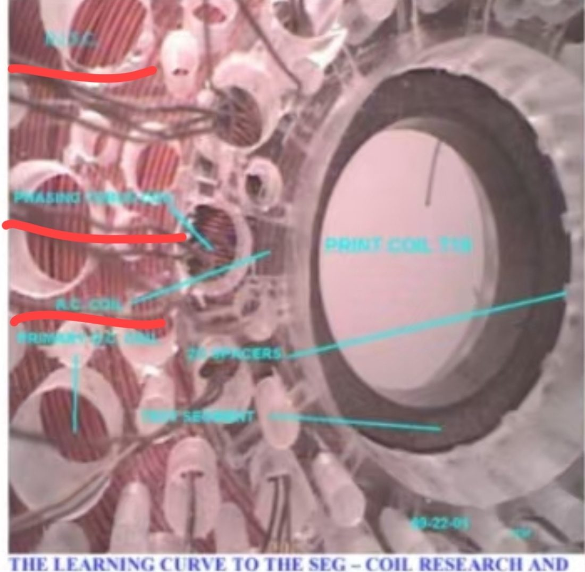
THE LEARNING CURVE TO THE SEG — COIL RESEARCH AND …。泛红紫的线圈结构图上用青蓝引线标出：PHASING COIL WINDING（移相绕组）、A.C. COIL（交流线圈）、INNER D.C. COIL（内直流线圈）、D.C. SPACERS、D.C. SEGMENT，以及面向工件的 PRINT COIL #16。⇒ 这就是母页「三明治充磁头」四层命名（外 D.C. → 中 Phasing → 内 A.C.，加印制线圈）的原始出处。
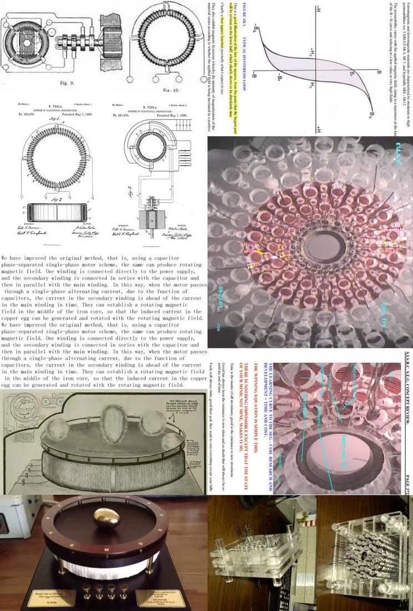
No. 382,280 / Patented May 1, 1888 / ELECTRO MAGNETIC MOTOR 的 Fig.9 与 Fig.13）；② 左侧正文原文：「用电容分相的单相电机方案，一个绕组直接接电源、副绕组串电容后与主绕组并联 …… 于是在铁芯中建立起旋转磁场，铜蛋中的感应电流便被带动着旋转」 —— 这是特斯拉哥伦布蛋的完整原理；③ 左下、左下角是真实的哥伦布蛋装置照片（圆盘 + 立着的黄铜椭球 + 接线柱）；④ 右上是同一组 3D 线圈结构剖切（与 i034 同族）；⑤ 右中是红色多环线圈阵列的实物特写（盘面密布线圈端面呈同心环）；⑥ 右上角还配了一张 B-H 磁滞回线（TYPICAL HYSTERESIS LOOP，标 Br / Hc / Bs）。意义：「多相绕组 → 旋转磁场 → 导体被带着走」这条链，是 1888 年就有的成熟技术。本页把这它列为能找到的最硬一条技术传承线索；但要提醒：这并不等于 Searl 声称的「输出大于输入」得到任何支持。
本组 9 张。图注由本机逐张打开实看后写下；缩略图宽 1100 px（原图 83.6 MB → 缩略图 7.9 MB），点击图片在新页打开原始分辨率文件。
③ 材料 · 磁体 · 超导
这一组是「东西是用什么做的」。本组最值得注意的是：同一件事在不同文件里给出的材料名单并不一致 —— 本组把每份名单原样列出，不做合并。
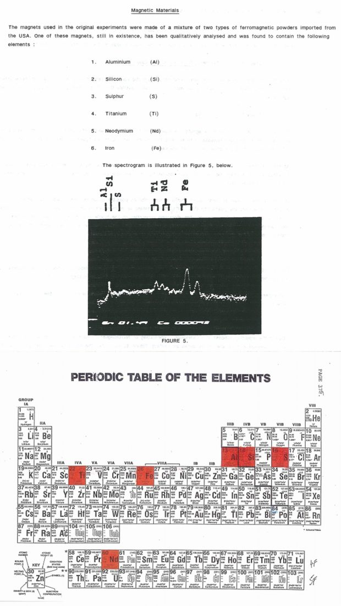
⚠ 值得注意：检出名单里没有 Co、也没有 B。这与常规烧结钕铁硼（Nd₂Fe₁₄B，含 B）不同；而工程图里出现的
COBALT/STEEL 层，在这份定性分析里没有对应元素。两者口径不一致，本页并列保留。
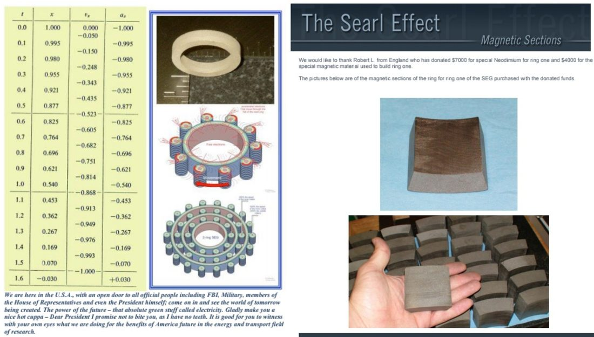
t / x / v_r / a_R 的数值表（t 从 0.0 到 1.6，x 从 1.000 单调减到 −0.030），配合三张 3D 图 —— 其中俯视图明确标出 Ring No.1 与 Ring No.2（双层滚柱）。底下是 Searl 口吻的一段话（对美国总统一方喊话，称愿为美国能源与交通领域的研究开门）。右栏：网页截图
The Searl Effect / Magnetic Sections。原文关键：感谢 来自英格兰的 Robert L. 捐了 7000 美元买 ring one 的 special Neodymium，另 4000 美元买 special magnetic material；下面两张照片就是用这笔捐款买到的 ring one 的「磁分段」（一张是一块深色矩形磁块，另一张是一只手托着几十块灰色磁块）。⇒ 环不是整块铸造，而是由若干「磁分段」拼成；且 ring one 用特制钕。
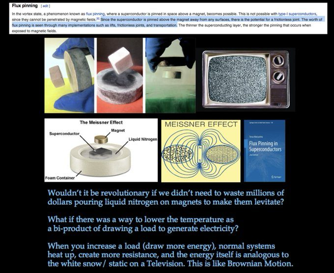
下方原文三段最要紧：
① 「如果我们不必花几百万美元往磁体上浇液氮就能让它悬浮，那岂不是革命性的？」
② 「假如有办法，让『取用电负载』这件事本身成为降温的副产品呢？」
③ 「常规系统一旦加大负载（取更多能量），就会发热、电阻增大」，那能量本身就像电视机的雪花屏（白噪声），这就像布朗运动。
⇒ 这就是「SEG 过载反而降温」这条主张的原始表述，也是母页与 IGV 页里「负载-温度曲线」那条可检验设计的出处。
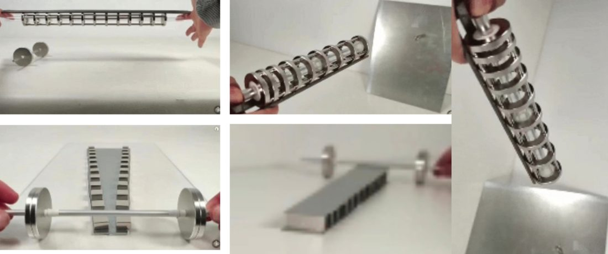
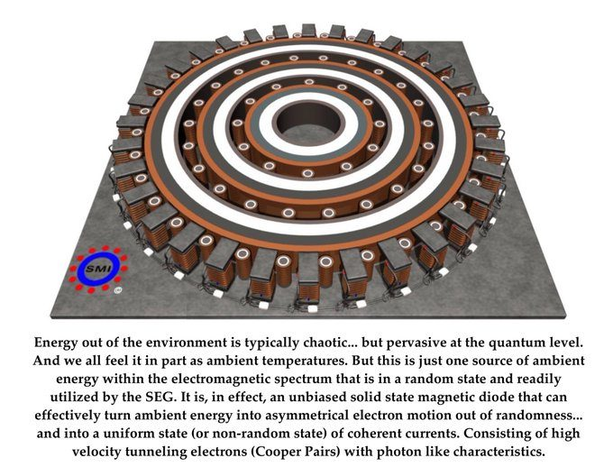
下方原文是本页最值得抄录的一段：「环境里的能量通常是混沌的 …… 它实际上是一支无偏的固态磁二极管（an unbiased solid state magnetic diode），能把随机的环境能量转成非对称的电子运动，并进而变成一个均匀（非随机）态的相干电流。其载荷是高速隧穿的电子（库珀对，Cooper Pairs），具有类光子的性质。」
⇒ 把载流子说成「库珀对」，是这套叙事里最「物理」、也最需要检验的一句话。
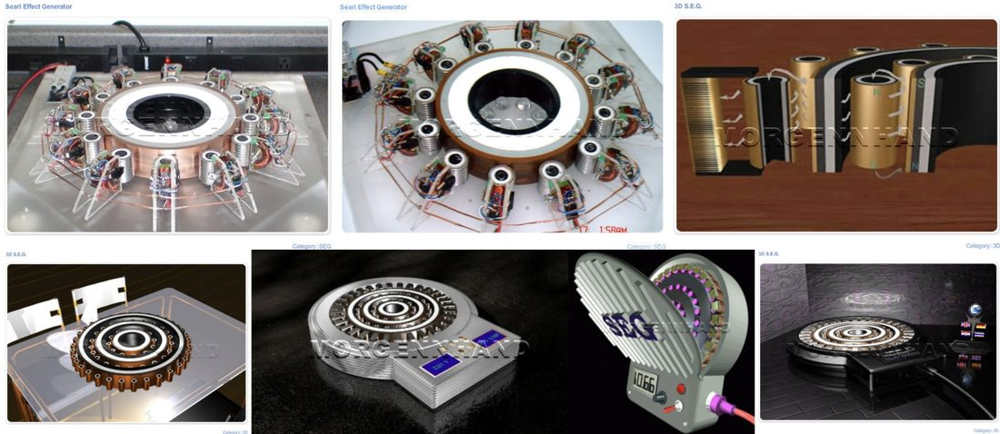
1:50am。下排四格是各版 3D 渲染（含一台外壳银灰、内部紫红发光的装置，壳上有 SSG 字样与一块数字屏）。⇒ 12 个滚筒与 i028 的
ring 1 = 12 rollers 互相印证；每个滚筒外缠细导线是实机上很值得注意的细节。
本组 6 张。图注由本机逐张打开实看后写下；缩略图宽 1100 px（原图 83.6 MB → 缩略图 7.9 MB），点击图片在新页打开原始分辨率文件。
④ 场形 · 波形 · 涡旋
这一组是把「场」画出来的各种尝试：磁显影实拍、算法生成的场图、展开的正弦波、以及 19 世纪以来的场形图谱。其中唯一有实物对应的是磁显影与展开正弦波两类，本组已分别标明。
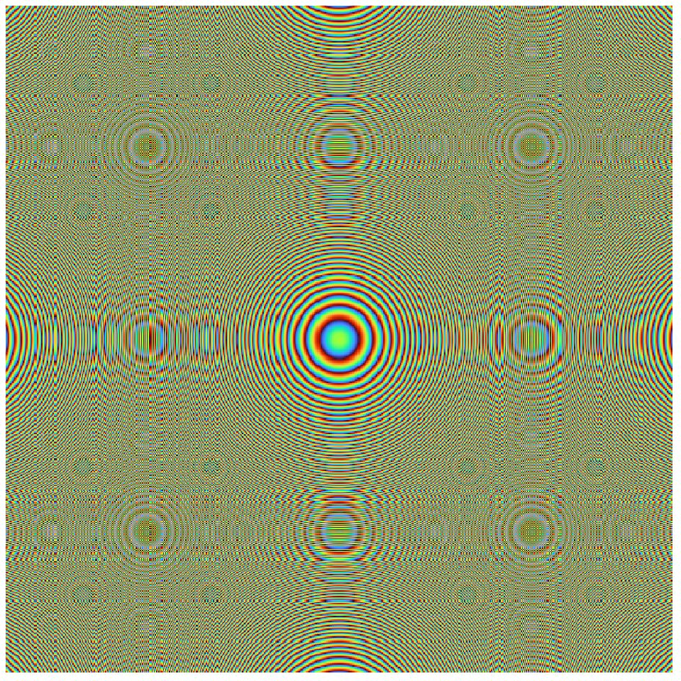
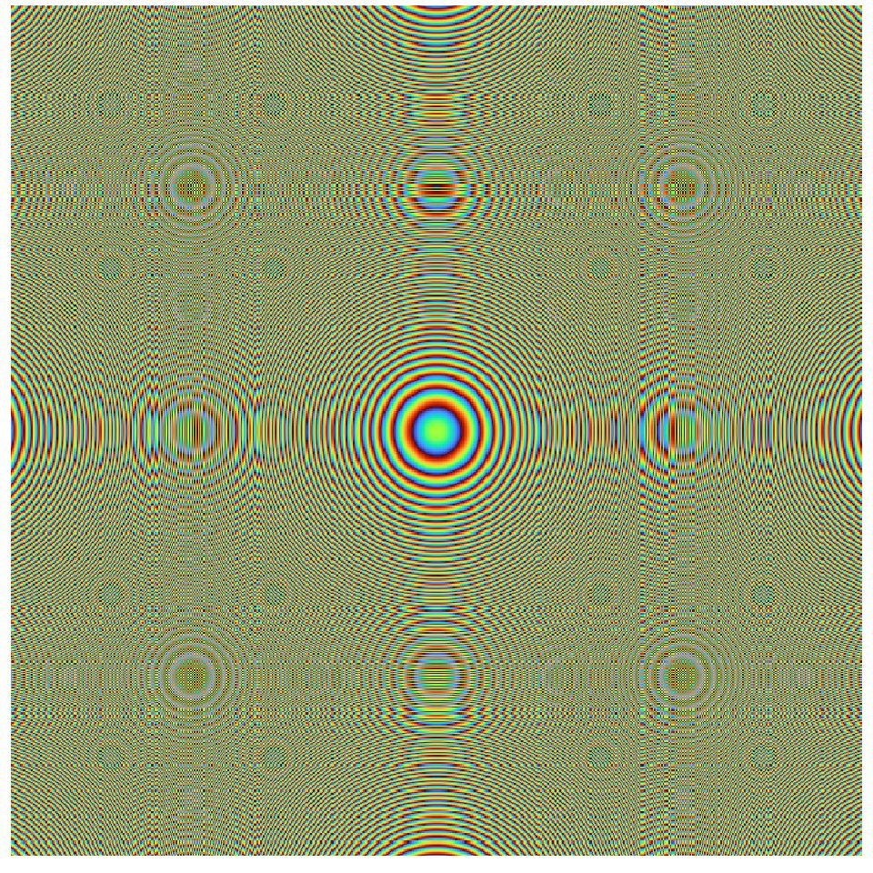
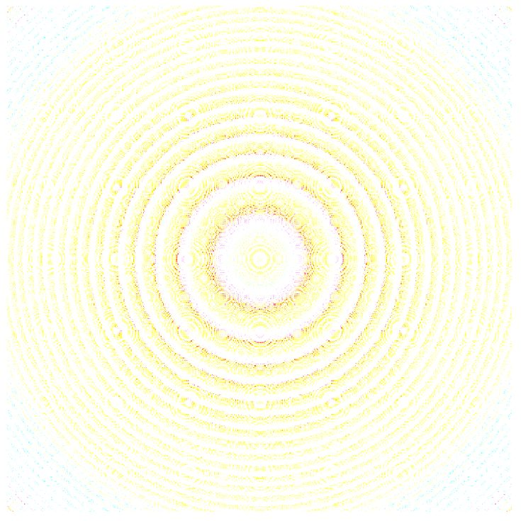
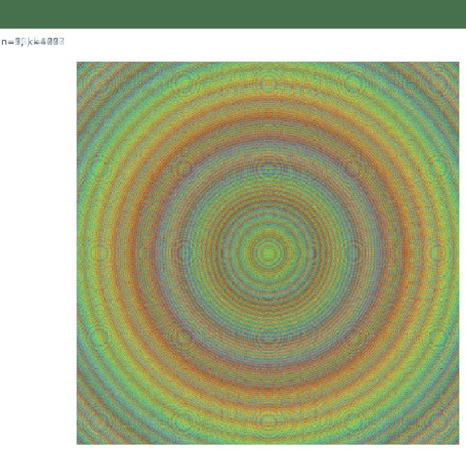
n = …、k = 4000 一类的算法参数），主体是绿/黄/红噪色的同心环，环上可见若干局部的小涡旋。这是参数化生成的场图，不是实拍。
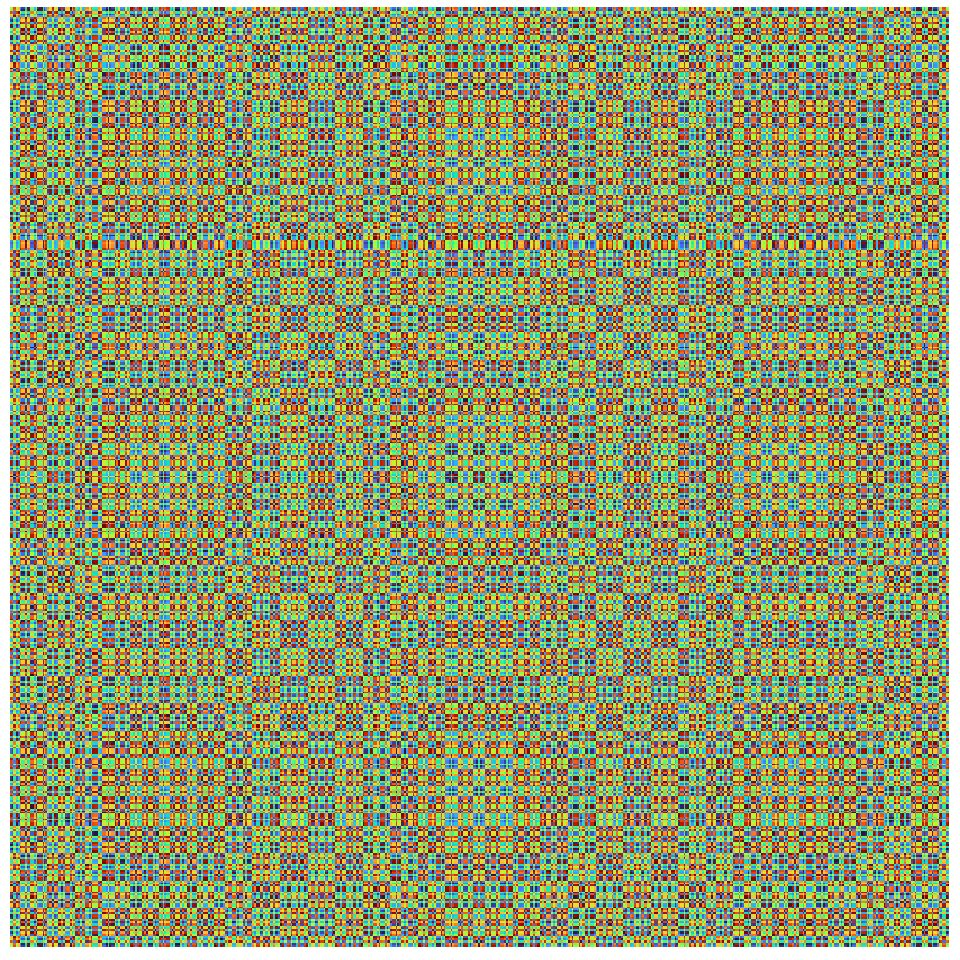
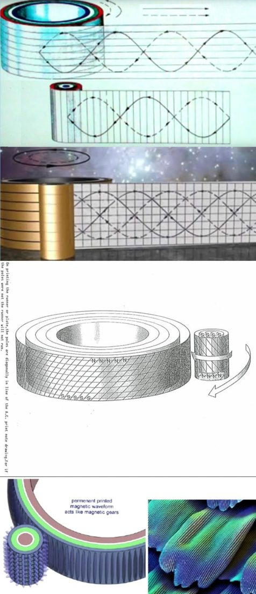
N N N N、下缘标 S S S S，滚筒同样标 N/S，一个白箭头指出旋向；⑤ 底部两小格：permanent printed magnetic waveform acts like magnetic gears 与一张绿蓝色波纹表面的微观照。⇒ 「环/滚筒外工作面要印出正弦波」这条，在图纸、实拍、示意三个层面都有对应物。
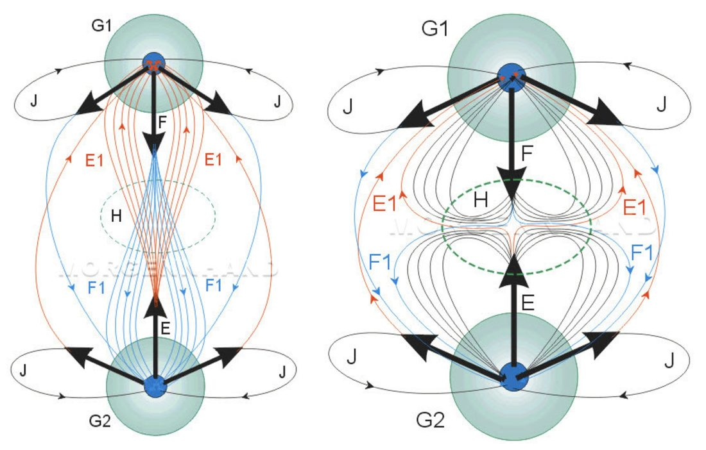
G1/G2、各自的水平环 J、一根向下的 F 与一根向上的 E（方向相反）。· 左幅：所有场线向中腰收束成一个尖点，中腰有一个虚线椭圆
H —— 吸引/汇聚型；· 右幅：场线绕开中腰的绿色虚线椭圆
H 向外鼓出，形成腰形双叶 —— 排斥/展开型。本页按「两种场形的可视化对照」归档。
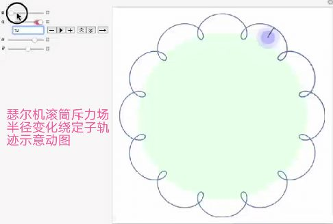
⇒ 12 瓣 = 12 个滚筒位置，与 i028 的
ring 1 = 12 对齐。
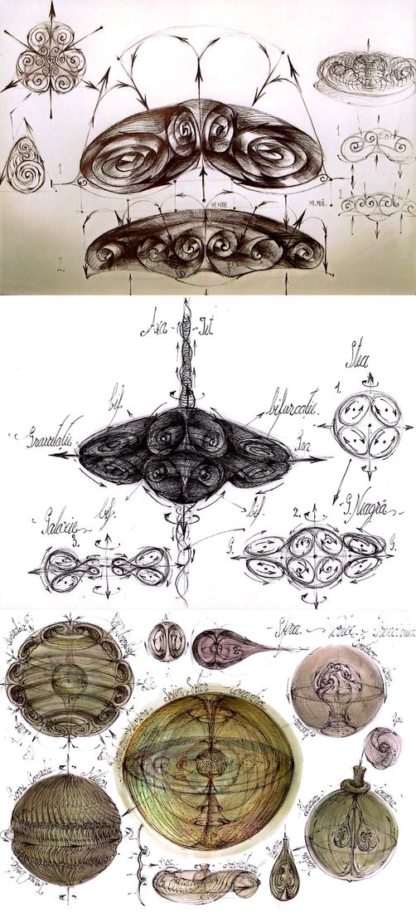
Ила / Боариоли / Забийка / Магни 等）；③ 彩色，多个球体与卵形，表面布满同心波纹与涡旋，中央一个是黄绿色大球（同心环 + 十字辐条 + 中心点）。定级：C —— 它们与 SEG 无引用关系，列在这里只是说明：「把场画成涡旋/球面驻波」这件事有两百年的图册传统。
本组 9 张。图注由本机逐张打开实看后写下；缩略图宽 1100 px（原图 83.6 MB → 缩略图 7.9 MB），点击图片在新页打开原始分辨率文件。
⑤ 幻方与真理表
这是一条与磁场并行的线：数。它的输出不是图，是表与阶数。本组把程序的界面、原始数据表、以及把数、几何、谐波仪联起来的那一页都收进来。请注意：本组的数字全部是算法输出，本页不把它们当物理量。
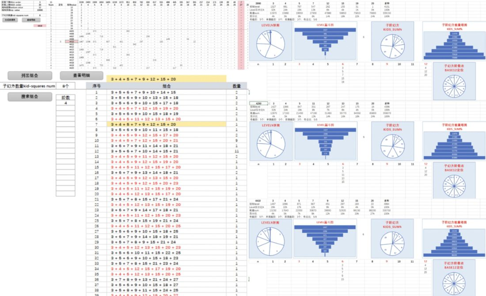
3+5+6+7+9+12+16+20，被高亮），配 列出组合 / 查询明细 / 搜索组合 按钮。中右三块是 3 阶 / 4 阶 / 5 阶的同一组分析单元：
LEVELS数据饼图 · LEVELS分布图（倒阶梯） · 子幻方 KIDS_SUMS饼图 · 子幻方数量指数图（正阶梯） · 子幻方指数 BASE12 定位（12 等分放射图）。
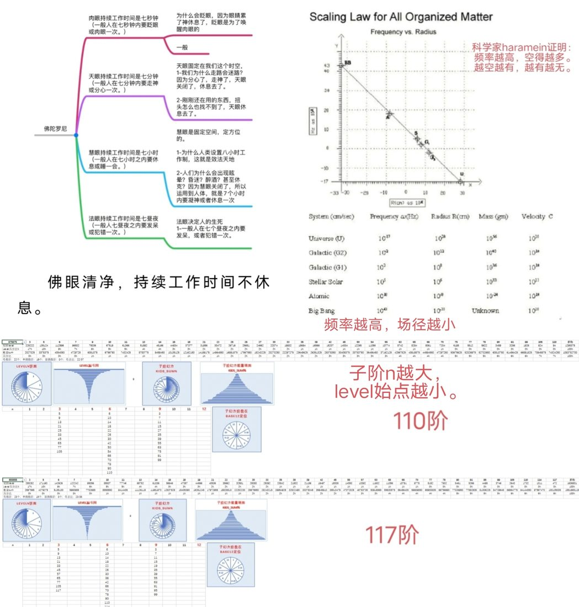
① 左上是一张「五眼与持续工作时间」树状图：肉眼 7 秒 / 天眼 7 分钟 / 慧眼 7 小时 / 法眼 7 昼夜，各配解释，末句大字「佛眼清净，持续工作时间不休息」。
② 右上是
Scaling Law for All Organized Matter（Frequency vs Radius 对数图），从 Big Bang 到 Universe 一条直线，附 Systems / Frequency / Radius / Mass / Velocity 表格（Universe 10¹⁷ / 10²⁹ / 10²⁸ / 10¹⁰ …）；图上红字：「科学家 haramein 证明：频率越高，空得越多。越空越有，越有越无。」「频率越高，场径越小」。③ 下半两张是真理表程序的同一组分级图，分别标 110 阶 与 117 阶，中间红字：「子阶 n 越大，level 始点越小」。
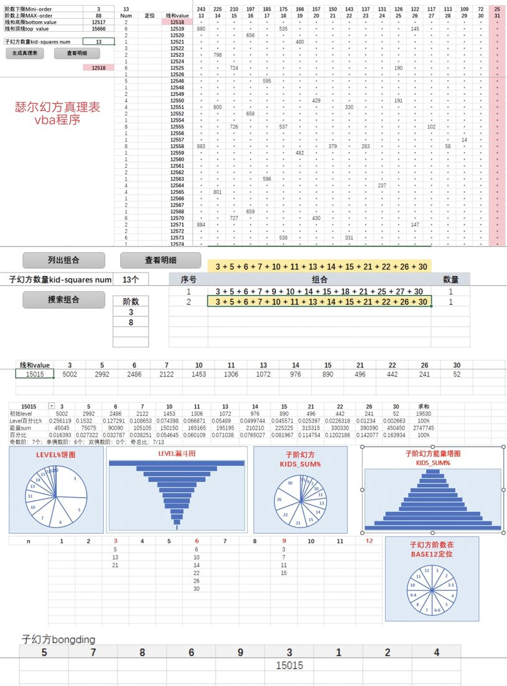
阶数上限 Min-order = 3、MAX-order = 88、线和值底线 = 12517、线和值顶 = 15666、子幻方数量 = 13。中部大表把「线和值」映射到 Num / 定位（当前定位 12518）。下方组合查找给出 13 项分解（3+5+6+7+9+10+14+15+18+21+25+27+30 等），并给出统计：线和value 各项、初差值 12→0、Level百分比、能量sum（45045 → 2747745，合计 2747745）、百分比，以及 奇数阶 7 个 / 单偶数阶 6 个。四张分级图 + 底部 子幻方 bonding（5 7 8 6 9 3 1 2 4）。⚠ 一个要点：「能量 sum」那一行是「乘出来的」，不是测出来的 —— 本页把它当算法输出看。
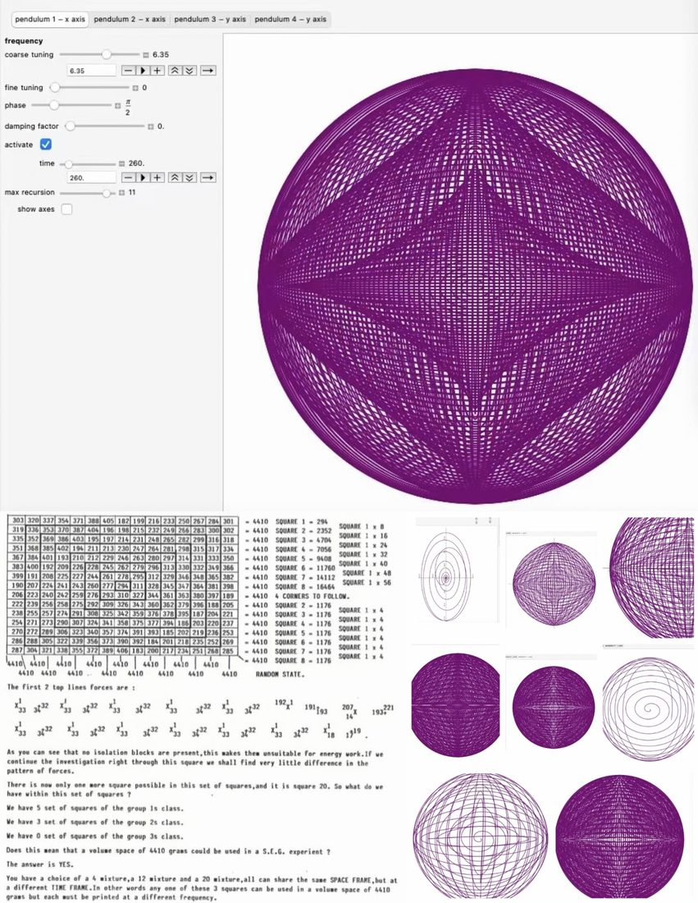
pendulum 1..4）、coarse tuning 6.35、phase π/2、time 260、max recursion 11。右上是它算出的紫色球面网图案。左下是一大块数字矩阵，右侧注记一串
4410 SQUARE 1 = 294 SQUARE 1 × 8 / SQUARE 2 = 2352 × 4 / SQUARE 3 = 4704 × 16 / … / SQUARE 8 = 16464 × 56。正文字最要紧：「如你所见，这里面没有 isolation blocks（隔离块），这使它们不适合做能量工作。…… 这一组方里还有一个可能的方，就是 square 20。那么我们有：group 1 class 5 组 / group 2s class 3 组 / group 3s class 0 组。」以及那段结论：「这是否意味着一个 4410 格的 value space 可以用于 S.E.G. 实验？答案是 YES。4 / 12 / 20 三种方可以共享同一个 SPACE FRAME，但在不同的 TIME FRAME —— 每个必须在不同频率印制。」
⇒ 4410 正是母页铁律里的「极带总数 4410」；这里它被定义为「value space」。右下六格是同一 Harmonograph 在不同参数下的场形（同心椭圆、球网、螺旋）。
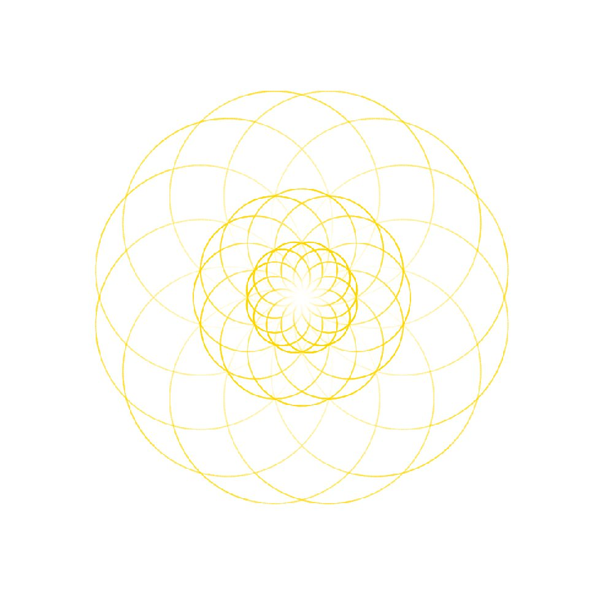
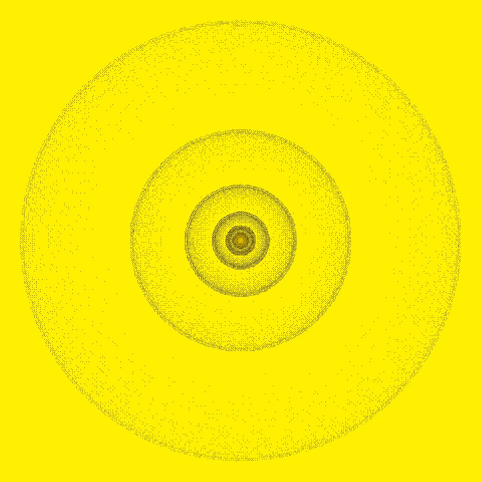
本组 6 张。图注由本机逐张打开实看后写下；缩略图宽 1100 px（原图 83.6 MB → 缩略图 7.9 MB），点击图片在新页打开原始分辨率文件。
⑥ 历史照片与人物
这一组是「谁、在哪、什么时候」。它不出技术结论，但它是本页所有考据的落点 —— 尤其 i021 那一页的脚注与 i033 的现场照。
4 80 90 / 29 37 85 / 4 93 79 / 82 …）与 square 4 字样，他在白板上讲的就是 4 阶幻方；旁边是一台 elite 牌投影仪。图下三行：Sir John Roy Robert Searl / May 2, 1932 – December 4, 2018 / #KnightOfThePowerOfTheAir。
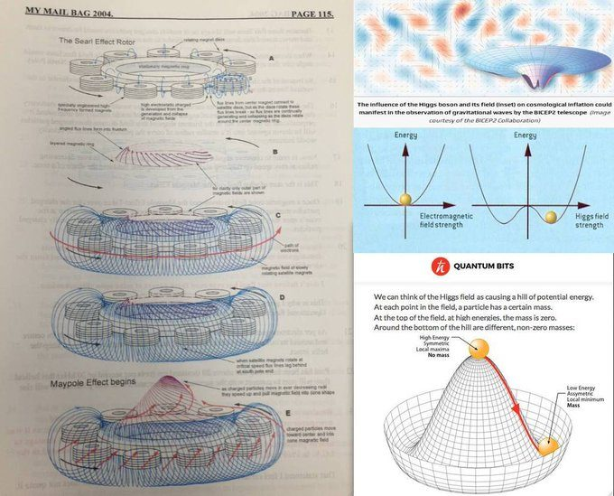
The Searl Effect Rotor，A~E 五张图：A 俯视多环滚筒阵列（标 Searl's discs / Searl's rollers / magnetic force path）；B 展开的磁力线（segmented roller ring with magnetic forces / angled flux lines loop into rotor / layered magnetic ring / to coils, north, south poles）；C、D 蓝色网格体内的力线分布；E 标题 Maypole Effect begins（五月柱效应开始）。右页是 Higgs 场科普（势能曲线 + 墨西哥帽势，
High Energy / Low Mass 与 Low Energy / Positive mass）。⇒ 关键词 Maypole Effect 出自这一页；右侧并置 Higgs 场，是「把真空/场当能量源」的论述支架。
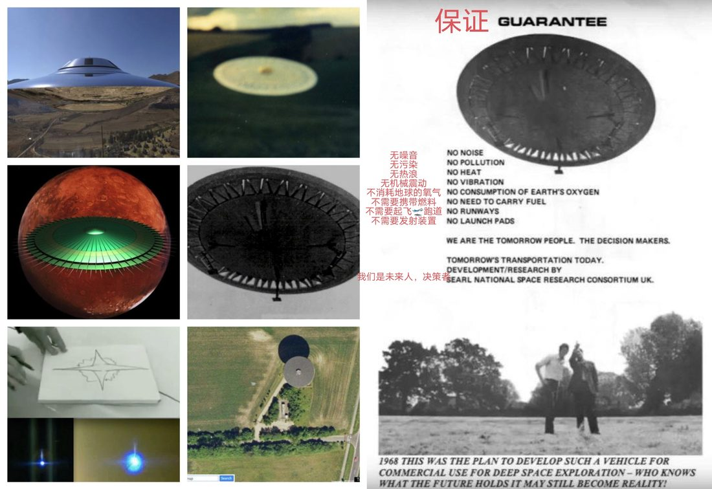
保证 GUARANTEE 表（中英对照）：无噪音 / 无污染 / 无热浪 / 无机械震动 / 不消耗地球的氧气 / 不需要携带燃料 / 不需要起飞跑道 / 不需要发射装置，落款 SEARL NATIONAL SPACE RESEARCH CONSORTIUM UK +「我们是未来人，决策者 / 明天的交通，今天」。右下格是 1968 年两人在草地上的照片，配文：「1968 年，这就是为深空探索商用而开发这种飞行器的计划 —— 谁知道未来会怎样，它也许仍会成真！」其余七格是各版飞碟合成照、装置实物黑白照、手绘碟形线图、蓝色等离子体爆发照。
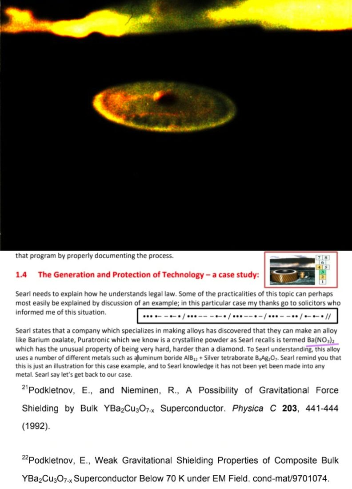
下半是传记正文 §1.4 The Generation and Protection of Technology – a case study：讲到某合金公司称能做出类似
Barium oxalate, Puratronic（Searl 称作 Ba(NO₃)₂）的晶体粉末、硬度超金刚石，配方涉及 AlB₁₂ + B₄Ag₂O₇，Searl 强调这「只是举例」。页脚两条脚注是本页最重要的一处引文证据：
21 Podkletnov, E., and Nieminen, R., A Possibility of Gravitational Force Shielding by Bulk YBa₂Cu₃O₇₋ₓ Superconductor. Physica C 203, 441-444 (1992).22 Podkletnov, E., Weak Gravitational Shielding Properties of Composite Bulk YBa₂Cu₃O₇₋ₓ Superconductor Below 70 K under EM Field. cond-mat/9701074.⇒ Searl 的传记脚注直接引用了 Podkletnov 的超导引力屏蔽论文 —— 这是一条可查证的引用链。
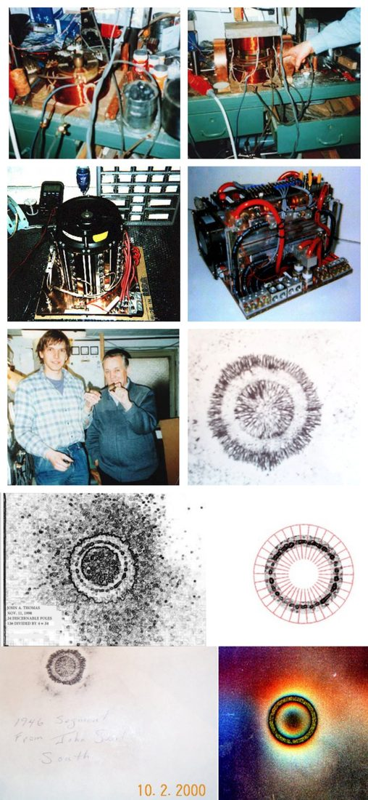
下六格：另一张更模糊的铁屑成像（图像左下角有署名框
JOHN A. THOMAS 1996 …）；一张红色线框磁极分布示意图；一张手写纸条，纸面有一个小铁屑环印，下方铅笔字写着 1946 Segment from John Searl …；以及一张深蓝紫底的彩虹同心环场图。⇒ 手写条上出现 1946 与 Segment，是「分段」这一造物在时间上的最早落点。页面时间戳
10. 2. 2000。
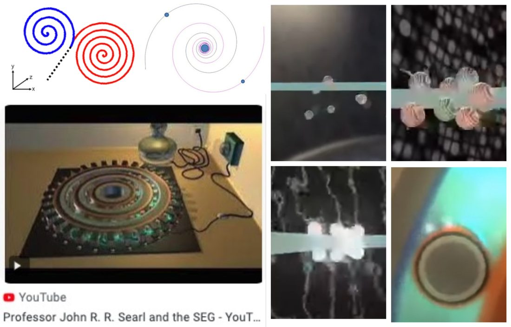
左下是 YouTube 视频截图（
Professor John R. R. Searl and the SEG），画面是实验室内一块方形黑色基板上的多层环形装置（绿色反光的环 + 中心柱 + 外圈黑块），旁边台面上有一个球形金属物件与一个小绿盒子。右侧四格是仿真动画的帧：白色小球/圆盘在一条浅蓝色面上运动（有残影），其中一格是横跨面上的白色块状物 + 上方垂挂的丝状物，另一格是一个环的端面透视特写。
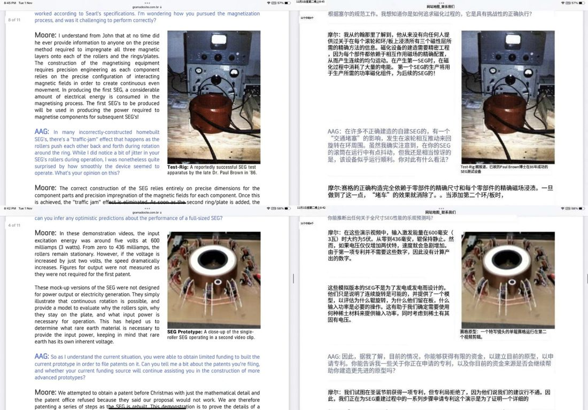
「在这些演示视频里，输入激励能量约为 5 伏、600 毫安（3 瓦）。从 0 到 436 毫安，滚筒保持静止。然而电压只要再加两伏，转速就急剧上升。输出数字没有测，因为首个专利并不需要它们。」
还说明：这些样机（mock-up）本来就不是为发电设计的，只是证明「连续旋转是可能的」，并作为评估「滚筒为什么转、为什么留在盘上、需要多大输入功率」的模型；以及 「美国专利局在圣诞节前拒绝了我们的数学提案，理由是这个方案不会工作；于是我们改为按建造步骤逐项申请专利」。
另有两处术语：
traffic-jam effect（自建 SEG 里滚筒互相顶住造成的「交通堵塞」）—— Moore 说只要尺寸精确、各部件磁场按精确图案浸印，堵车效应就会消失；以及提到 已故 Dr. Paul Brown 1996 年的成功测试台。
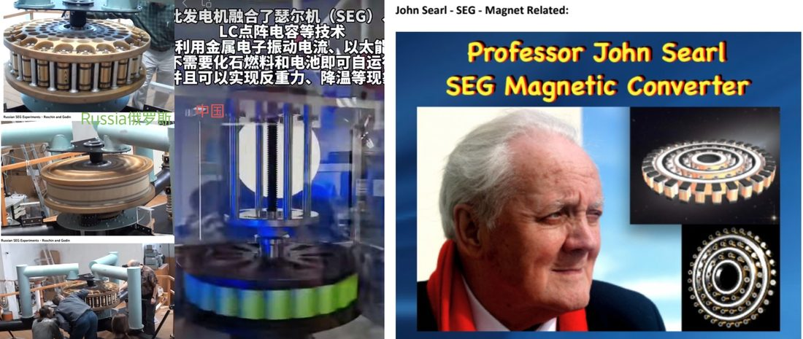
Russia 俄罗斯：立式装置（顶部多层环 + 柱身）、另一台装置照、以及一间实验室里几人围着带透明罩的立式环形装置。中栏红字标 中国：一台透明圆柱罩内的装置，下半部是蓝色发光的滚筒阵列，中心有竖杆。中栏顶部中文原文：「七发电机融合了瑟尔机（SEG）LC 点阵电容等技术，利用金属电子振动电流、以太能，不需要化石燃料和电池即可自运行，并且可以实现反重力、降温等现象。」
右栏是
Professor John Searl – SEG Magnetic Converter 标题、Searl 本人肖像，以及两幅 SEG 环的 3D 渲染。
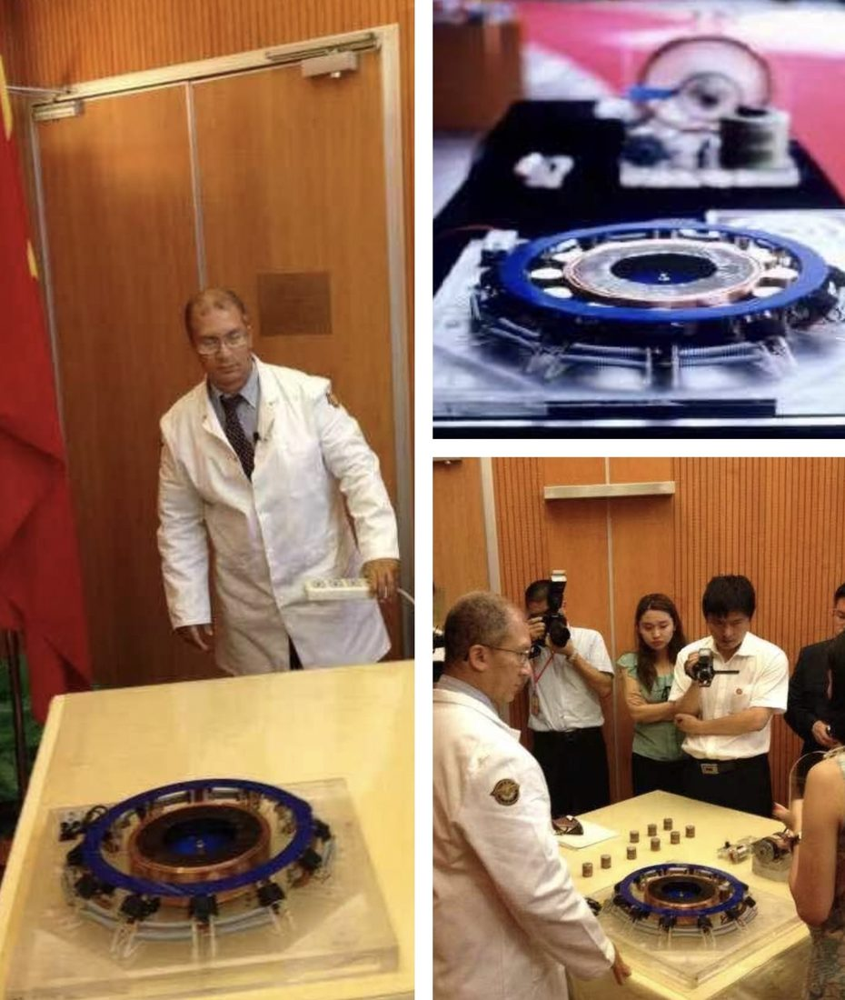
⇒ 这是「Searl 团队在中国做现场演示」的直接图像证据。
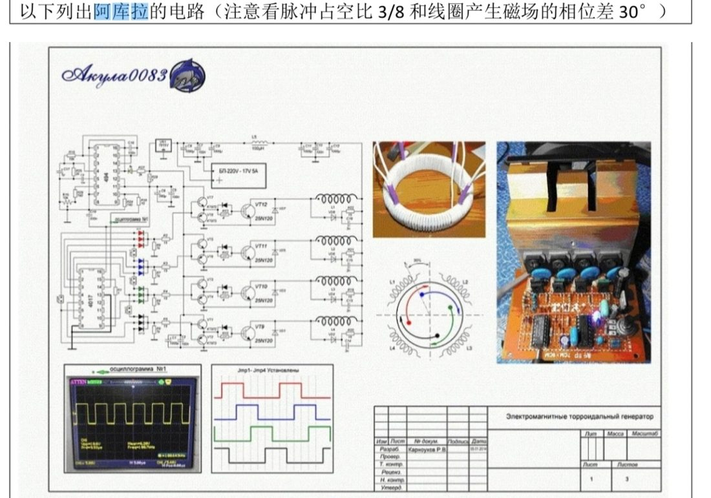
Акула0083 + 完整电路原理图（БП-220V→12V 5A 电源、CD4017 计数器、多只 2N70 系列 MOS、四组线圈）；右上两格实物（一个白色环形线圈、一块橙色 PCB 带蓝色电解电容与红色 LED 阵列负载）；中右是四相向量图（四线圈 90° 分布）；下排是示波器四路方波（Vpp 4.1/5.6/7.8/12.4 V，频率 24.99/27.02/32.05/62.5 kHz）与四相时序图；右下表格 Электромагнитные торроидальный генератор，作者 Карельцов Р.И.，日期 21.09.2016。⇒ 一个独立于 Searl 的俄语圈「多相环形自持」方案。本页列它是因为：它把相位数、占空比、相位差这三个可测参数全写明了 —— 这是 Searl 资料里最缺的东西。
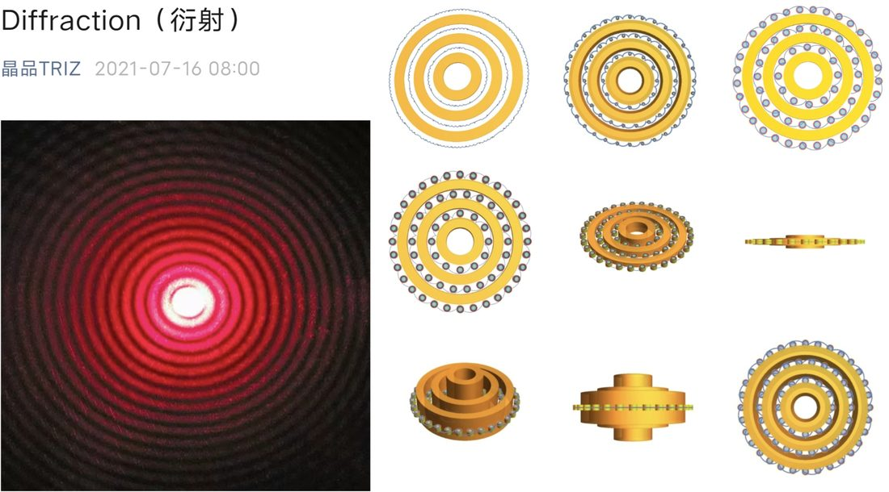
Diffraction（衍射）、署名 晶品TRIZ 2021-07-16 08:00，画面是一张红色同心环衍射图（中心亮白环向外扩散）。右格是七个金色多环模型：从单纯的三个同心环，逐步加到每环边界密布小球，另有扁平斜视图、极扁的侧视剖面、以及分层筒形剖面（腰际横穿一条绿色点带）。定级：C —— 把多环结构类比为衍射/干涉同心环，是读法。
本组 11 张。图注由本机逐张打开实看后写下；缩略图宽 1100 px（原图 83.6 MB → 缩略图 7.9 MB），点击图片在新页打开原始分辨率文件。
⑦ IGV 飞碟总集
这一组是「飞碟本体」：飞行照片、制造总集、控制原理中文原文、滚筒分片规格，以及场光环与磁路仿真。本组里 i040 是 IGV 姊妹页多处中文说法的原文出处。
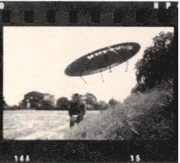
14A / 15）：一个碟形飞行器悬停在草地上空，碟底伸出三根细长支腿，碟缘有一排亮窗状结构；前景草地上站着一个人（背对镜头），人的尺度反衬出飞行器相当大。
Nose / Parabolic / 烧蚀罩 / 发动机）、一张圆形剖面工程图（标 1st Magnetic… / 2nd Rotor / Core (Bearing). Magnets / 3rd magnetic… / 4th Flights Cells / 5th Plasma Barrier / 两套发电机 / Disc. (Drawn 1981?)）。中列：
by Prof. J.R.R.Searl — Explorer Mk.1 manual flight and research testing vehicle 侧视线图，标注 1.1m dia EGV / 2m / 4.75m / 5.65m / 1.97m / 3.0m；云中黑色碟形剪影；碟形悬停在树林上方的黑白照。右列八格是各角度 3D 渲染（含绿色碟体 + 外圈滚珠阵列、剖面透视可见内部放射肋）。
「关于瑟尔飞碟的控制，无限电波控制 64 个锤子 plunger 敲击装置，让它倾斜，就像我们用手敲击陀螺一样，它会向一侧倾斜然后去找到新的平衡点，通过在外围安装陀螺仪来找到平衡，searl 说如果陀螺仪装在内环就不管用，因为内环内形成了自己的引力场，就像地球人不知道地球在宇宙中高速运动。距离瑟尔的 IGV 飞碟大致 2000 英寸范围内的无线电设备都会失灵。瑟尔飞碟外壳是木质的，具体请看 searl 详细资料。」
下方拼图：
11m dia IGV 三视图（标注 1.75m / 1m / 1.37m / 2m / 3.0m，附注 Cross-section shows retractable undercarriage and revesed upright seating position also three hatches within the concentric central shaft）、两环剖面图、巨型金环实拍、PLAN 视图、以及 FROM IMAGINATION TO REALITY 海报拼图（含 4×4 幻方与光谱）。
·
eight segments makes a roller right and —— 一根滚筒由 8 片叠成；·
at through the center it's a monopole —— 从中心穿过去是单极；· 另有
does each roller have a north and south north / they're all identical right and what / and is the central partner of eight slices as well —— 补充：所有切片完全相同。另两格是访谈现场，背景海报为
Exponentials Leeds 2010 — The Exponential Revolution Conference（英国利兹）。左下格是 3D 图：一个中心黑盘大环 + 三根分片滚筒。
IONIZATION GLOW PINK OR BLUE（电离辉光呈粉红或蓝色）；中央是一个碟形剖面，标 VACUUM ENVELOPE（真空包膜）；黄色箭头表示流场，上方一组 + 号标 POSITIVE ION FLUX、右下标 NEGATIVE ION FLUX。底部绿字注明该图由泰国一位名叫 Freddie 的人提供，「其中许多项目目前属于机密」。
ACSolver / Add Circle / Add Block / Circuit Property / Magnet Material / Current / Turns / Magnet mass 等），右侧是彩色磁力线图 —— 有圆柱状、斜置长方体（内为水平条带）、环形（俯视同心环）以及从中心向外辐射的扇状力线 + 边缘点阵等几种。⇒ 文件名里作者自己标了「非现实」。本页因此把它定位为：「用 FEA 试算 SEG 磁路」这一路线的早期尝试样本，不是结果。
本组 6 张。图注由本机逐张打开实看后写下；缩略图宽 1100 px（原图 83.6 MB → 缩略图 7.9 MB），点击图片在新页打开原始分辨率文件。
⑧ 讲义 · 论述 · 手稿
最后一组是「别人怎么讲这件事」：大屏讲义、Searl 团队自己的论证书页、手绘草稿。其中 i042 与 i053 各含一条可核对的引文线索。
26±0.1），引出 ØD2mm, H3mm 86×8、Ø81mm、H3mm；中央是一个大圆内均布斜置小矩形块的阵列（标 210×4、210÷? = 210×4）；右侧有 Ø8 × 86、Ø2 × Ø2、H8 ×、一个斜绕圆柱的线圈草图；右下角是手算：210 ÷ 3.14 = 78、210/3.14 = 66.8、66.8 ÷ ? = 78，以及 87、6.8。⇒ 拿 Ø210 的周长反推直径（≈66.8）与分配数（78）。
右半是老式 CRT 雪花屏照片 + 原文：
「往系统里浇液氮强制冷，就像慢放看电视上的雪花。减少非相干 ≠ 产生相干。慢动作的混沌 ≠ 几何秩序。」
「我们最终要的是相干的电流。这套革命性的充磁过程，就是达成这一目标的手段。心的相干，与我们所用之电的相干。」
右下角是一篇文章《Light as air》：已故的 Eric Laithwaite（直线感应电机发明者）曾与他合作研究蝴蝶翅膀的虹彩 —— 结论是鳞片的刻蚀结构造成衍射，且鳞片开合时会排开空气形成局部真空，从而有助于飞行。
⇒ Laithwaite 这个名字的出现是本页一条重要的引文线索（他是直线电机之父）。
下方四段原文：
「Searl 效应还包括部件在无摩擦、无空气阻力下旋转。」
「没有摩擦，是因为「涡流」使部件彼此不接触 —— 就像两块想互相排斥的磁铁。」
「运动部件上没有空气阻力，是因为 S.E.G. 产生的巨大电荷把所有空气推走、制造出真空。（这同时也防止氧化。）」
「S.E.G. 的运动部件就像身处太空一样。」
Neodymium / Dielectric / Magnetic / Copper，中心 Positive Charge、右侧 Negative Charge，上方弧线 Electron Energy Cycle，右上「Power Source」配一张太阳照片）。下格是水电大坝的开放系统能流图（雨 → 水库 → 坝体 → 水轮机 → 出水口 → 蒸发 → 回云）。原文把两者逐项对上：
「SEG 有效利用的是量子动能 …… 这个循环可以用水电大坝来类比，因为两者的驱动都直接或间接来自太阳辐射的熵。」
「钕（Nd）层相当于电子能量的水库；特氟龙（Teflon）层相当于坝体本身；磁体层相当于发电机组，把电流变成有用的功（磁体不是电池）；铜层相当于坝底喷出的出水口 —— 同样地，SEG 把电子喷射进大气。」
「水柱（或电子）离开系统后动能降低。要注意：这些放电回到环境去充电！」
Square Group 1, 2 & 3 Switching Patterns / By John A. Thomas Jr. —— 三个 4×4 网格，分别对应 Clockwise、Counterclockwise、Rotating & Oscilating 三种驱动走向（箭头 1.2.2.1）。② 铁屑成像黑白照 + 红色线框磁极分布图。③ S&SRC S.E.G. CONCEPTVIEW PAGE 374（「THE LEARNING CURVE TO THE SEG — COIL RESEARCH AND DEVELOPMENT = TIME AND COST」 + i034 同款线圈结构）。④ SEG-Concept-Review.pdf 封面。⑤ 3D 渲染（时间码 0:05:11）+ D.I.S.C. PRINT COIL #16 11-27-00 红色插管盘实拍。⑥ 室内照片（一位男士站在仪器林立的实验室里）。⑦ 亚克力箱内的密集线圈阵。⑧ 一个红色/粉色盘面密布线圈端面的特写。⑨ 示波器照片 —— 屏幕上一条清晰的正弦波（时间码 0:06:01:05）。⑩ 方格纸上手绘的正弦曲线。⇒ ① 把「幻方分组」直接映射成「线圈开关模式」，是「幻方 ↔ 驱动时序」这一跳的关键图；⑨⑩ 是「工作面要印正弦波」的实测/手绘印证。
B-Field Torsion ( Opposite mode ) 与 JL Naudin 1999。下格左是黑白铁屑成像（环状 + 飞散颗粒），左下角署名框写：
JOHN A. THOMAS / NOV. 11, 1996 / 「34 DECERNABLE POLES」 / 「136 DIVIDED BY 4 = 34」；下格右是红色线框示意图（一个圆环 + 环内均布放射刻度 + 若干黑点）。
⇒ ① JL Naudin 这个名字与本项目里的
24_searl_SEG/jnaudin/ 镜像直接对上；② 34 极 = 136 ÷ 4 是铁屑成像给出的极数判读，也是一个可核对的数字。
BLOCK 24.：CONTAINS 25,272 AVAILABLE SPACE FRAMES1,053 VALUES SQUARES 3 TO 26START VALUE = 8775 END VALUE = 9827VALUES NOT USED = 197 VALUES USED = 8561 SQUARE ONLY = 198 … 11 SQUARES SHARING = 1 VALUEBLOCK 24 TOTAL LEVELS : 3³=351, 4³=263, 5³=211 … 26³=41左栏是
Book4 页（碟形剖面线图 + 俯视圆形图，标 125.0）与书页 DREAM_1_STATES PAGE 405/406。中栏标题 瑞一先生，一张嵌套椭圆轨道的太阳系示意图，标出各行星距离（50亿公里 等）并标注 （物质监狱）、（太空飞船减速带）；配中文段落讲「一百二十亿公里之外一片漆黑、太阳风被挡成鸡蛋壳」。⇒ 右栏这张表把「幻方 → BLOCK → SPACE FRAME → 立方数分层」的统计数据全给出来了（1,053 个值、856 个被用、197 个未用），是本页唯一带完整计数的真理表数据。
本组 7 张。图注由本机逐张打开实看后写下；缩略图宽 1100 px（原图 83.6 MB → 缩略图 7.9 MB），点击图片在新页打开原始分辨率文件。